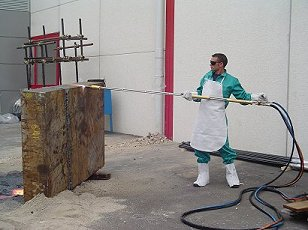
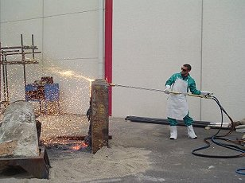
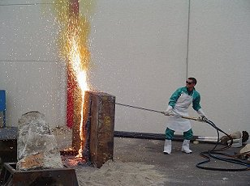
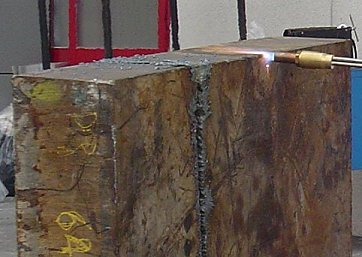
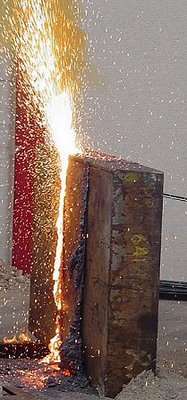

|
 |
May 21, 2007 |
(This article has been "peer-reviewed.")
|
| Editorial note: It should be noted that Dr. Wood has questioned the source and authenticity of the photos that Jones presents, for which there has yet to be any eyewitness corroboration. She does not believe these are photos of a real event, nor can material be determined by evaluating an altered photo. Therefore, she has never even speculated as to what might or might not be the cause of what appears to be a hypothetical event. Dr. Wood has only addressed Jones' faulty understanding of the physical properties of materials. It appears that Jones has been using what Dr. Wood has addressed to manipulate the public into believing the photos are valid. Dr. Wood has only addressed Jones' faulty argument, which is stated here: (mp3) |
Jones claims (although no other scientist has verified this with their own analysis) that he has found evidence for thermate in iron-rich particles extracted from a sample of dust taken from an apartment about 100 metres from the South Tower. He argues (note: not proves) that it could not have been contaminated by thermate possibly used by workers during clean up of Ground Zero for the following reasons:
1. the dust was collected a week later, before much clean up began. However, even though it was in its very early stages, Jones cannot deny that this work was going on before this dust was collected, so what makes him think that workers could not have used thermate torches at Ground Zero before even a week after 9/11, if only for removal of large pieces of debris to facilitate the search for bodies? How can he be sure that iron-rich particles produced by thermate torches cutting through steel, demonstrated at
http://www.youtube.com/watch?v=Wn-MCCZ3O1Mand carried on the wind could not have passed through the two broken windows of a room only 100 metres away and settled in dust originating from the two towers? The simple truth is that he cannot admit this possibility as credible because it would undermine his claim.
2. Jones says that there is no documentation that thermate was used by the workers and tells those who argue for its use to provide it. Well, That is only as far as he knows! They can offer (and Wood has offered — but Jones ignores it in his paper) something that is possible evidence. The photos at
http://i18.photobucket.com/albums/b108/janedoe444/trouble/45_thermite2_2960.jpg
http://drjudywood.co.uk/articles/a/PhillipsCritique/physpics/44_thermite1_0033.jpg
http://drjudywood.co.uk/articles/a/PhillipsCritique/physpics/45_thermite2_2960.jpg
 |
prove that either thermate or oxygen cutters were being used to cut up steel at Ground Zero. Those sparks are not coming from an oxyacetylene cutter! There is no operator in the vicinity. The possible evidence for clean-up workers using thermate is therefore better than Jones thinks — or perhaps better than he wants to admit, for, presumably, he has seen these photos appearing in papers written by Wood and Reynolds. Why did he not dismiss them in his new paper if he was certain that they do not indicate thermate cutters at work? Because no doubt he was as unsure as many others are. He realises that these and other photos taken at Ground Zero of incandescent fires emitting sparks could weaken his claim that the thermate he thinks he found came only from the towers. Ignoring data or possible evidence that undermines your hypothesis is, of course, bad scientific practice. It is certainly not "applying the scientific method" — part of the very title of Jones’ paper!
3. Jones says: "Furthermore, Janette MacKinlay collected the dust inside her apartment just a few days after the buildings collapsed, so there was very little time for any molten metal spheres created somehow by the clean-up itself to have made its way into her 4th-floor to be mingled in with the dust up there" (p. 78). Well, actually, the collection was not a few days later but a whole week later, which did give sufficient time. Dust carried in the air from the clean up at Ground Zero could easily have reached an apartment with broken windows merely 100 metres away and have settled inside it. After all, dust from the towers’ destruction did. Jones' arguments against contamination are weak. But he has to make them, otherwise, his strongest piece of evidence for thermate collapses. Speaking of collapse, Jones keeps using in his paper the word ‘collapse’ in describing what happened to WTC 1 and WTC 2. Yet the photo in his paper of the North Tower being turned, essentially, into a huge cloud of dust is completely incompatible with the notion of an intact building collapsing in the way WTC 7 did. What happened was pulverisation into fine dust and complete disintegration, floor by floor. Not ‘collapse.’ So why does Jones keep using this misleading word? Is it because he believes that floors did drop down and that their impact on one another alone can account for the high percentage conversion of concrete (as well as steel) into dust? If so, he is absurdly wrong. If not, I suggest it is because he knows (but will not admit) that even thermate and conventional explosives cannot account for that level of destruction of the towers. To admit that this word is inaccurate would be to admit that thermate was redundant as an agent of destruction, given such wholesale pulverisation for which it could not have been responsible. So perhaps Jones persists in using this inaccurate term in order to avoid having to account for a degree of destruction that is inexplicable to the thermate hypothesis and makes it completely redundant! After all, if something caused a lot of steel and concrete to turn to dust, who needs thermate except as a red herring that serves to hide the real cause of the destruction?
4. Jones also claims: "In addition, the distance to the apartment from the clean-up operation is about 100 meters (about a football-field length), while in our experiments with thermite/thermate, the glowing sparks (metallic droplets) are seen to travel only a few meters or yards. The holes formed in the two broken windows of this apartment were about two feet by three feet, increasing the unlikelihood that any metallic spheres from the (improbable) use of thermate at GZ could have entered the apartment during the few days before the dust was collected" (p. 78). I am unconvinced by this argument. If the 2'x3' holes were large enough for the original dust to pass through them, they were also large enough for smoke and dust created by clean-up activity at Ground Zero to have passed through them. Moreover, the iron particles created by the far more violent explosions in the towers could have been much smaller than those Jones created in his simplistic laboratory experiment. This means that they could have traveled much further than a few metres. His experiment therefore does not rule out the possibility that thermate residues in smoke generated by thermate cutters used in the clean-up reached a house 100 metres away.
Jones concludes: "This is a compelling argument against "accidental" contamination of the dust she collected in her apartment even if thermate had been used during clean-up (which is highly unlikely due to safety/liability issues)" (p. 78).
Hardly compelling. In fact, Jones' refutation of the possibility of contamination is full of gaping holes. It is almost certain that Janette MacKinlay would have brought dust into her apartment on the soles of her shoes every time she entered it, after walking in the dust-filled vicinity of Ground Zero 100 metres away. Perhaps iron-rich particles in vapour from oxygen cutters had settled in this dust. Then the dust came off her shoes inside her apartment, got mixed with the rest of the dust from the destruction of the South Tower and became part of the sample. Perhaps other people brought dust into the house as well. Perhaps these particles mostly came through the windows. My point is this: the contamination problem in Jones’ sample is far more serious than he wants to admit. Indeed, the fact that he felt he had to make so many hand-waving arguments against it shows that he considers it a serious issue. Unfortunately, he can belittle the possibility only with highly contestable opinions, not with scientific rigour. This leaves doubt that the elements he detected characteristic of thermate came only from the towers and not from the clean up at Ground Zero. He can hardly proclaim his finding as proving the use of thermate beyond reasonable doubt — the standard of proof needed to establish guilt in a law court. Greening’s paper at
has pointed out that fires in the WTC heating gypsum wallboard would generate sulphur dioxide, and he has cited evidence from the New York State Department of Health that, even after 50 days after 9/11, there were still high concentrations in the air around Ground Zero of sulphurous gases and sulphur-containing particulates. And Jones thinks his finding of a high percentage of sulphur in his iron spheres is evidence of thermate? Ridiculous! It was more likely contamination from the sulphur in the smoke that spread out from the WTC for miles.
Here is my rebuttal of other points in Jones’ paper:
1. "(On the other hand, the fast-moving dust clouds on 9/11/2001 traveled for many blocks and certainly would have carried small residues with them, for example, residues from thermite cutter-charges used to help destroy the Towers)" (p. 78).
Why would those who destroyed the towers risk using thermite cutter charges that would leave traces all over the WTC and elsewhere for curious physicists to detect eventually, thus exposing their fiendish plot? Did they not anticipate thermite or thermate ever being detected? Or did they just cross their fingers that it would not? Was thermate used because some of the steel columns and girders would have otherwise remained standing? Well, so what if they had? Why would this matter to the plotters? It was not as if they had to destroy the towers completely in order to ensure everyone in the towers died, leaving no survivor to talk about hearing explosions — that could easily have been covered up with bogus explanations. Did they use thermite because they wanted to quicken the cleaning up of Ground Zero by ensuring that girder fragments were small enough to fit trucks, thus avoiding having to cut them to size? Heck! That is taking a huge risk for eventual detection just to assist the clean-up workers, who would have done it themselves, eventually, as NIST photos like those at
indicate they in fact did! (Notice, by the way, the diagonal cutting in the material saved by NIST). So much for that argument. Anyway, why would speed matter, given that the general public had no access to Ground Zero to spot anything suspicious (indeed, there was nothing suspicious to hide from sight). Why use thermate in order to loosen trusses so that floors drop on top of one another when this did not actually happen, each floor being blown in turn to smithereens — mostly into fine dust? Why, if thermate was somehow added all over the towers, did molten metal not pour out of many other points of the towers? The 47 core columns in each tower were far too thick to be cut by thermate. So what did? And why was so little of these columns left in the mysteriously small debris piles? Thermate cannot achieve that. None of this adds up. Jones has not satisfactorily addressed the rationale of using thermate. It was the miraculous fact that none of these massive columns were left standing (something that could not have happened if the original pancake theory had been right) that was one of the reasons that made people suspicious about the official account. Given what actually happened to the towers, using thermate seems pointless to me. Anyway, it could not have done the job of severing the 47 main columns in each tower. Nor could conventional explosives. Therefore, some other agent still had to be at work which Jones ignores.
2. "Furthermore, ironrich spheres were found in the WTC dust several blocks away from GZ in large numbers which essentially eliminates the possibility that these spherules could be due to thermite used at ground zero" (p. 78).
Who is arguing that all the ‘ironrich (sic) spheres’ in the sample had to come from the clean-up site? That assumes they were all created by thermate. It is a self-serving, straw-man argument. If the iron spheres had been created by tons of high-explosives blasting steel and heating up fine iron fragments until they melted and became spherical (or, alternatively, by some other high temperature-inducing agent, such as lasers or DEW), why should we not expect to find them in WTC dust several blocks away from Ground Zero? Given alternative causes for these iron spherules, Jones' discussion makes ad hoc assumptions.
3. "Iron melts at 1538 C, so the presence of these numerous iron-rich spheres implies a very high temperature. Too hot in fact for the fires in the WTC buildings since jet fuel (kerosene), paper and wood furniture — and other office materials — cannot reach the temperatures needed to melt iron or steel" (p. 77).
Yes. But not too hot for the temperatures created by high-explosives close to steel girders. According to one authoritative source at
"The split second of a high-explosive detonation may produce temperatures as high as 5,500 Kelvin and pressures up to half a million times that of Earth's atmosphere."
4. "In addition, if one adds other oxidizers to the mix such as copper oxide, potassium permanganate, zinc nitrate, and/or barium nitrate, then copper, potassium, manganese, zinc and/or barium will show strong peaks in the thermite-produced metallic spherules. Thus, one can determine by X-EDS analysis just what elements were used in the originating aluminothermic mixture. It is quite possible that different formulations of thermite analogs were used in the destruction of the WTC Towers and WTC 7" (p. 79).
Whoops! WTC 7? Who has suggested that thermate was used for WTC 7? It was a classic controlled demolition! There is no video evidence for thermate burning away before the demolition itself. This is an example of how ridiculously obsessed Jones is in invoking thermate as a causative factor for the collapse of every building in the WTC. Jones argues that the presence of various elements such as copper, potassium, zinc and barium in the iron-rich particles is due to oxidisers having been added to the thermate. He regards their presence as confirmation that thermate was used to melt the iron spheres. He ignores the fact that these elements are commonly found in the everyday world, so that their presence in his dust sample could easily be accounted for as contaminants from the cocktail of metals from computers, other electrical equipment, etc in the towers that were dispersed as dust into the atmosphere over a wide area. To pick out only one explanation of their presence in the particles because it suits his theory and to ignore other natural ones amounts to inexcusable bias and a failure to prove his case beyond reasonable doubt. A proper scientific approach should consider all possibilities. Jones can only argue against contamination with contentious handwaving. He cannot rigorously disprove it.
Jones ends his discussion by saying: "We consider the information borne by these previously-molten microspheres found in large numbers in the WTC dust, for they tell us much about what took place that remarkable day in history" (p. 81). The trouble is that they do not tell us anything that is certain because the information is ambiguous. Molten iron particles could have been created by the blast of high-explosives or by other processes involving exotic military weapons that Jones had summarily dismissed without giving any well thought-out reasons. They might even have been scattered into the air from thermate or oxygen cutters used at Ground Zero. We would hope scientists could consider all possible interpretations of the material evidence and then give us the truth, not just a particular interpretation of it that could be wrong. The best that might be said of Jones’ assertion to have detected thermate is that it may be evidence that thermate was used on 9/11 at WTC. Unfortunately, that is not strong enough to convict in a court of law. His claim is based on evidence that is flawed because — despite his denial — his sample might have been contaminated. Alternatively, it could have contained iron spheres created by high explosives during the collapse of the towers or at Ground Zero during clean up. His physical evidence is also not good enough for the 9/11 truth movement seeking re-investigation of the events of that day. When forced by public pressure to respond to evidence of thermate at WTC, officials in the American government will no doubt say that it was, indeed, used during the clean-up— whether it was or not! Who, then, will be able to prove that they are lying? Where is your smoking gun then, Dr Jones?
I do not deny that there is evidence suggestive of thermate present at WTC. I just do not think it amounts to proof, as Jones is trying to promote, especially when he refers to his results as providing "absolute certainty" (!). For example, Jones points out that FEMA reported without explanation that steel samples taken from the rubble showed evidence of "oxidation and sulfidation with subsequent intergranular melting"
http://www.fema.gov/pdf/library/fema403_apc.pdf
Also, there are photos of red-hot metal at Ground Zero:
But perhaps there are other explanations for this red-hot metal that Jones refuses to consider? Stealing the thunder from Wood, who was the first to point them out on her website at
Jones refers to the corroded, sometimes partly melted cars in the parking lot near the towers as evidence supporting his theory (not hers!). He suggests that the dust clouds that swept over the cars contained thermate, causing them to ignite and oxidising their roofs, etc. However, he admits that there is no likely way of proving this because none of the cars is available to be examined. Their condition does not, therefore, necessarily prove the presence of thermate. This is still no more than uncorroborated conjecture on his part. Finally, Jones sees the pools of molten metal reported in the rubble and under WTC 7 by Peter Tully of Tully Construction of Flushing, N.Y., and Mark Loizeaux of Controlled Demolition, Inc. of Phoenix, Md., as evidence of thermate. This might seem a plausible explanation but for the fact that they said that molten metal was seen three, four and five weeks later. Any leftover thermate would surely have been consumed by that time and any steel that had been kept molten by exothermic reactions with it should have cooled and solidified into slag long before then. It suggests that either the pools of molten metal were being heated by something other than thermate or these reports were concocted. They could have been disinformation planted in order to provide false clues leading people to wrong conclusions about how the two towers were destroyed. Alternatively, the stories about the molten pools could have been meant to provide a bogus explanation for hot spots and other anomalous physical conditions at Ground Zero that had been caused by whatever turned most of WTC 1 and WTC 2 into dust. My point is that, even assuming that all this evidence suggestive of thermate is real, it is circumstantial and inconclusive — merely ad hoc interpretation. Other kinds of physics that Jones refuses to consider may have been at work, causing these unusual features. Thermate is now assumed almost by default by many prominent 9/11 researchers as the source of the reported heat without any consideration of other possible causes of these anomalous features. Pools of molten metal (supposing they ever existed) and melted cars are only circumstantial, not prima facie, evidence of thermate. Worse still, photos are sometimes mistakenly cited as evidence of thermate-heated pools. For example, the photo at
http://www.debunking911.com/thermite.htmoften thought to show fire fighters staring down into such a pool far more likely shows them shining lanterns down a hole in their search for bodies. It would have been far too hot to get so close to 2000°C molten metal.
Many 9/11 websites point to a photo of a diagonally-cut column stump with solidified molten steel on its edge
as evidence that thermate was used in the cutting of steel columns to facilitate the collapse of WTC 1 and WTC
2. But, as pointed out at
many photos show workers cutting up girders, whilst material saved by NIST display diagonal cuts in girders with molten steel solidified on their edges. The fire fighters seen in the photo do not imply that it was taken before clean-up began, when fire fighters were still searching for bodies. They were there to put out any fires caused by the oxygen-cutting of the steel, which is a method capable of slicing any size of girder, as the photos at
 |
 |
 |
 |
 |
demonstrate. This photograph well-known to students of 9/11 is therefore not evidence of thermate having been used to cut columns during the destruction of the towers. Anyway, there is no evidence of any technology being available to cut clean through massive, vertical columns. Is Jones leading us up the wrong path away from the truth with weak evidence masquerading as hard evidence because it was obtained with sophisticated scientific equipment? I believe so. My current view is that thermate was probably not used during the clean up at Ground Zero, that the high percentage of sulphur Jones found in his iron spherules is due to contamination from sulphurous gases in the air and that the iron spherules themselves came from either the clean up operation or (more likely) from the towers as they were destroyed.
We should be suspicious of research that examines some pieces of evidence for conspiracy and willfully ignores others that the preferred theory cannot explain. We should also be wary of research that focuses only on one hypothesis and rejects (even ridicules, as Jones does) other possibilities for no better reason than that they involve physics about which the scientist (in this case, Jones) knows nothing. Those in the US government who will resist all attempts to re-examine the events of 9/11 will no doubt have their experts come up with all sorts of bogus explanations for these anomalies when the challenge finally comes. Therefore, we need hard physical evidence that cannot be refuted or explained away. The signature of thermate that Jones found in iron particles taken from one or two dust samples near WTC can be explained as due to contamination. It is not hard, irrefutable evidence. (En passim, no careful scientist would make such strong claims based upon such one sample!). Whether this explanation is actually implausible (as Jones thinks) or not (as I think) IS BESIDE THE POINT. The point is that it provides room for doubt about the ultimate provenance of the dust sample that debunkers of 9/11 truth can seize on. Jones’ experimental finding is not the conclusive, smoking gun evidence for a high-level conspiracy that some people in the 9/11 truth community want to believe it is. Years before Jones appeared on the scene, little-known investigators assembled arguments and evidence contradicting the official account of 9/11 that are far more convincing because they cannot be rebutted or explained away. Thus, it is not as if his purported new evidence is essential to the cause of the movement. In fact, there is very little in this paper that is new, apart from his claim about iron particles in a dust sample from one of the towers containing a high percentage of sulphur and other elements found in thermate — a finding that can be alternatively explained in terms of contamination. Persisting to promote evidence that is flawed because it could have other explanations that he ignores can only damage the cause of the 9/11 truth movement. Focussing on only one dubious reason for the damage to the WTC and mindlessly dismissing all other possibilities as unworthy of investigation amounts to poor science. How can one make that judgement until one has conducted a study sufficiently thorough to decide whether other causes of the destruction are plausible? The credibility of the movement is not helped by a mainstream scientist if his evidence for one of the causes of the collapse of the towers is refutable and if he discourages without good reason other avenues of investigation that might explain what he found. Let us not forget what the 9/11 truth movement is about. It is about forcing a re-investigation of 9/11 so that the real mass-murderers are brought to justice. For that, we need to look at all anomalies in the damage to the WTC and to consider all possibly conceivable methods for its destruction, however far-fetched some of us judge them to be, in case that opinion is uninformed, being based upon abject ignorance of the weapons possessed by the US military. Otherwise, the 9/11 truth movement may be allowing the terms of investigation to be restricted (perhaps even controlled) in such a way that it stops the whole truth about that terrible day from ever being found.
The author is a theoretical physicist who specializes in superstring and brane theory, the author of three books, and a former university lecturer.
|
|
|
|
|
|
|
|
In accordance with Title 17 U.S.C. Section 107, the articles posted on this webpage are distributed for their included information without profit for research and/or educational purposes only. This webpage has no affiliation whatsoever with the original sources of the articles nor are we sponsored or endorsed by any of the original sources.
© 2006-2007 Judy Wood and the author above. All rights reserved. |
|
|